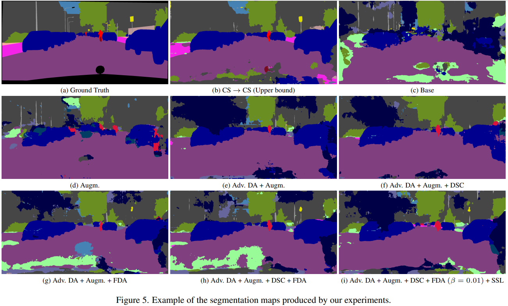

My Projects

Gender Identification using Machine Learning
A group project focused on gender identification from face images using PCA and SVM. Achieved high accuracy through optimized data analysis.
Technologies: Python, PCA, SVM
View on GitHub

Real Time Domain Adaptation in Semantic Segmentation
A group project combining STDC network with adversarial learning for real-time semantic segmentation on GTA V and Cityscapes datasets.
Technologies: PyTorch, Python
View on GitHub